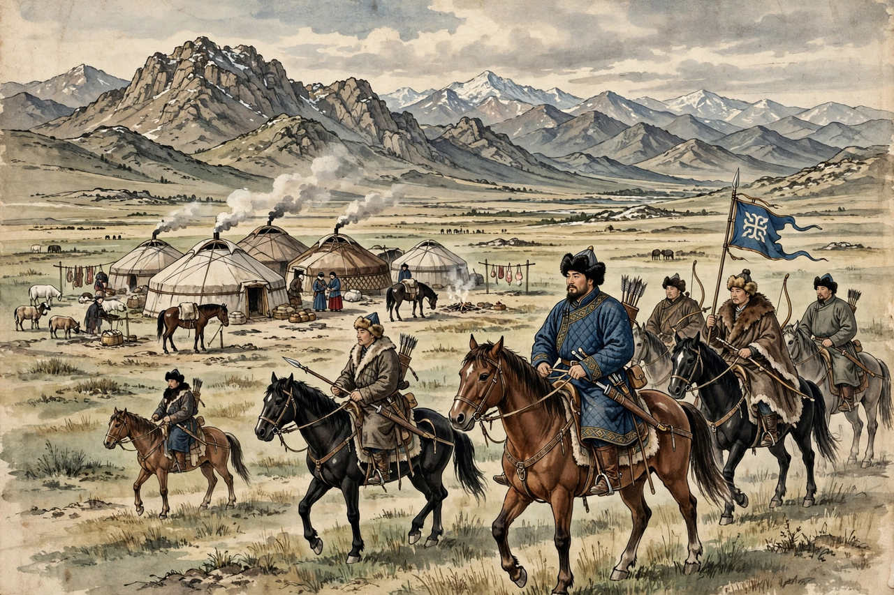

The Chagatai Khanate was a Mongol and later Turkicized khanate covering Central Asia, named for Chagatai Khan, second son of Genghis Khan. It encompassed lands from the Altai to Transoxiana, along the Silk Road.
After Mongke's succession disputes, the khanate asserted independence in the 1260s under Alghu and Qaidu's era. In the 1340s it split into western Transoxiana and eastern Moghulistan. The west fell to Timur; eastern khans continued in the Tian Shan region into the 17th century.
The Chagatai language became a major Turkic literary language of Central Asia; Islam spread gradually, especially under Tughlugh Timur.